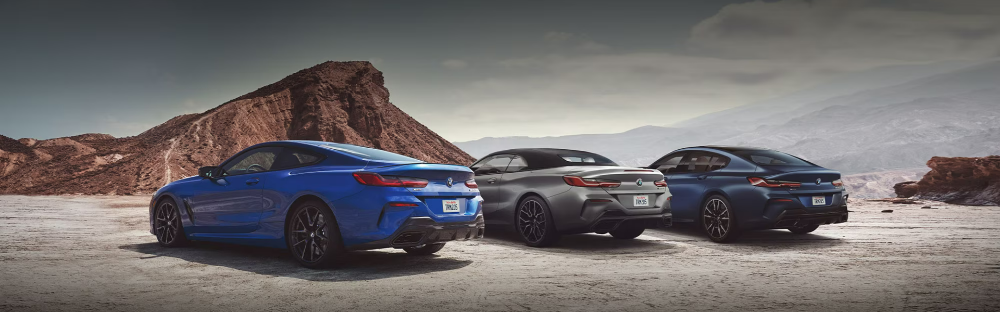

BMW M8 Competition Gran Coupé – The Ultimate Masterpiece
Introduction
The BMW M8 Competition Gran Coupé is a 4-door luxury sports coupé that blends performance,
elegance, and cutting-edge engineering.
It is designed for enthusiasts who demand both thrilling speed and ultimate comfort in one car.
-
Engine & Performance
- Engine: 4.4-liter TwinPower Turbo V8
- Horsepower: 617 hp
- Torque: 750 Nm
- 0–100 km/h: just 3.2 seconds
- Top Speed: 305 km/h (electronically limited)
- Transmission: 8-speed M Steptronic automatic
- The V8 engine doesn’t just deliver raw speed, it roars like a beast,
giving a thrilling soundtrack with every acceleration.
With BMW’s M xDrive all-wheel-drive system, it ensures flawless grip and razor-sharp handling.
-
Exterior Design
- The BMW M8 Competition Gran Coupé boasts an aggressive yet elegant aerodynamic design:
- Sleek LED headlights
- Gloss black signature kidney grille
- 20-inch lightweight alloy wheels
- Quad exhaust outlets
- Flowing coupé-style roofline
- Its look perfectly balances sporty aggression with luxury sophistication.
-
Interior & Comfort
- Step inside, and you’re welcomed into a luxury cockpit with sporty highlights:
- Merino leather upholstery
- Carbon fiber and Alcantara trims
- M-specific sports seats with ventilation & massage function
- Customizable ambient lighting system
- 12.3-inch digital driver display + 10.25-inch infotainment touchscreen
- It’s a perfect mix of premium comfort and advanced technology.
-
Technology & Features
- BMW iDrive 7.0 system with gesture control
- Apple CarPlay & Android Auto support
- Harman Kardon or Bowers & Wilkins premium sound system
- Adaptive cruise control
- Head-Up Display
- Wireless charging + multiple USB ports
- Every feature is designed to make driving futuristic and effortless.
-
Safety Features
- BMW prioritizes safety with high-end driver-assist technologies:
- Multiple airbags
- Lane departure warning
- Blind spot detection
- Parking assistant with 360° cameras
- Automatic emergency braking
- Dynamic stability & traction control
-
Price & Availability
- The international price of the BMW M8 Competition Gran Coupé starts at around $140,000 – $150,000 USD.
In regions like India or Pakistan, after taxes and duties,
the cost can cross the PKR 30 million+ range.
-
Conclusion
-
The BMW M8 Competition Gran Coupé is the ultimate expression of luxury meets performance.
It dominates highways with its breathtaking speed while offering the comfort of a luxury lounge.
Every detail—engine, design, interior, technology,
and safety—makes it a masterpiece that truly deserves the title of a dream car.
Go back